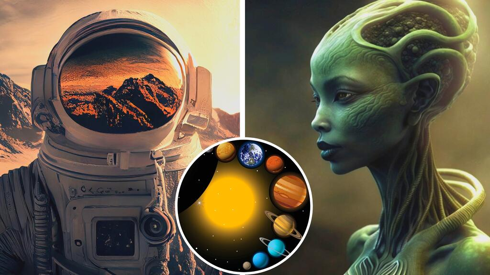
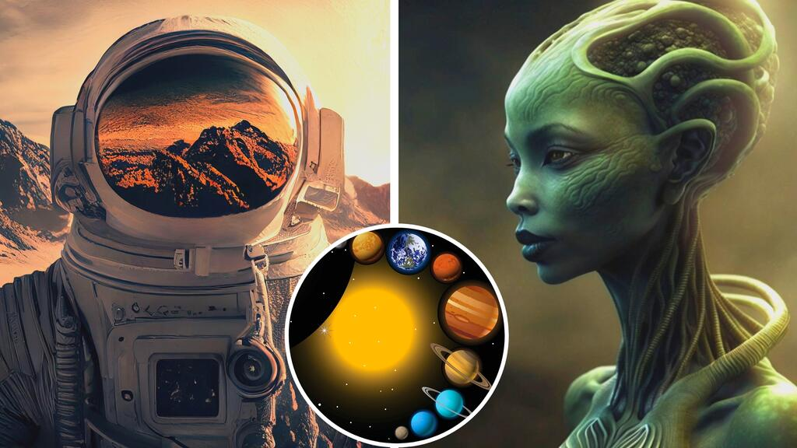
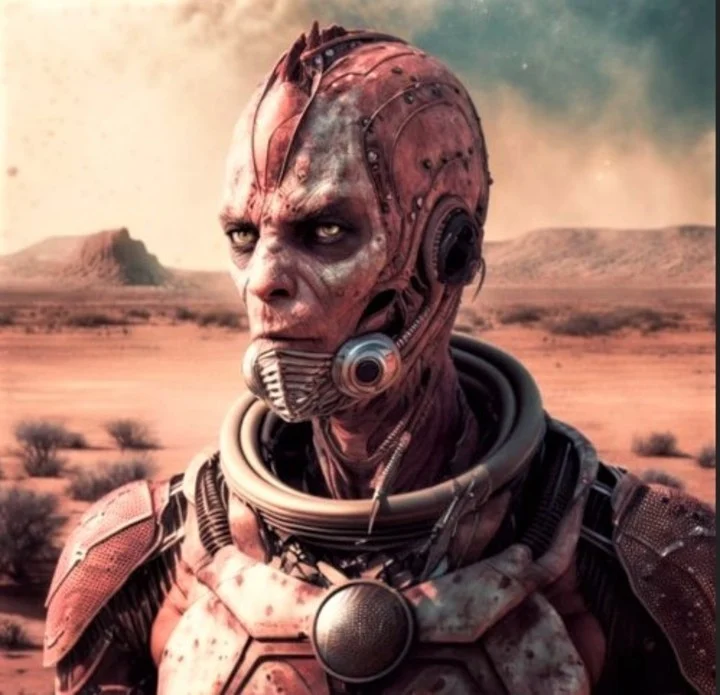
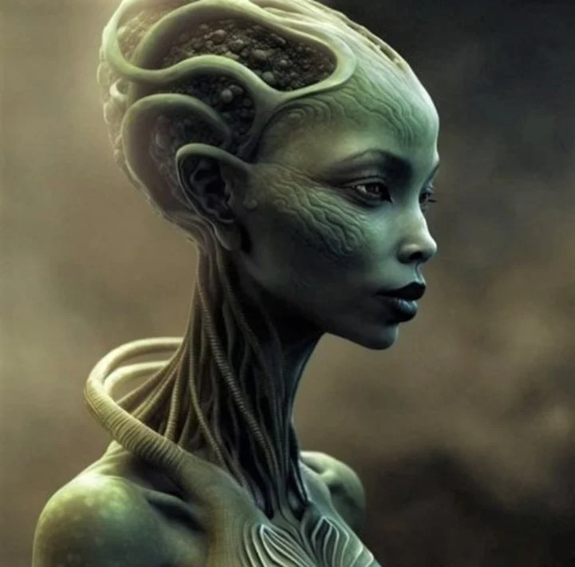
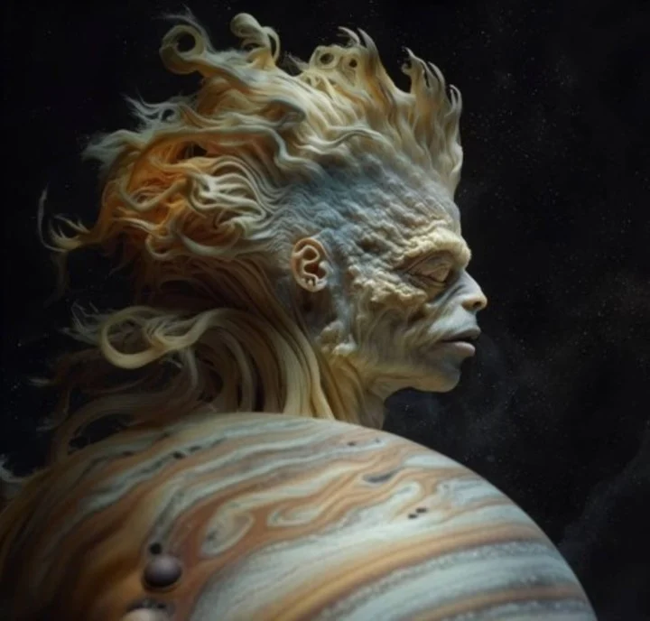
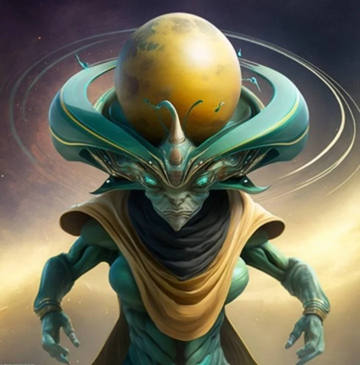
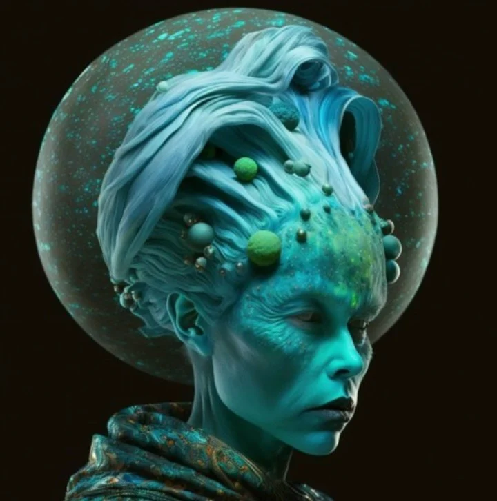
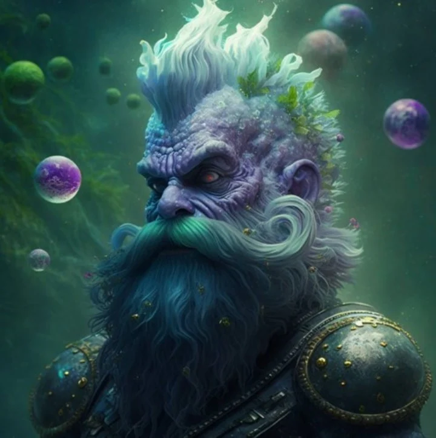

IA: sí se verían los humanos en cada planeta del Sistema Solar
Cómo lucirían los habitantes en Marte, Venus, Júpiter y otros planetas según la Inteligencia Artificial.
Cómo lucirían los habitantes en Marte, Venus, Júpiter y otros planetas según la Inteligencia Artificial.
La vida extraterrestre es algo que desvela al mundo. De ahí que a lo largo de décadas, en cine, series y dibujos hayan imaginado cómo se verían esos seres extraños. Pero hoy, la inteligencia artificial (IA) puede darnos una idea mucho más concreta de cómo se verían los habitantes de cada planeta del Sistema Solar.
El sitio web de Muy Interesante utilizó la plataforma Midjourney impulsada por IA con la que se pueden crear imágenes a partir de descripciones, para crear rostros y cuerpos de los habitantes los planetas vecinos, incluso el Planeta Tierra.
A continuación, las características de los seres de Júpiter a Mercurio, pasando por Saturno y Venus más el resto de los seres yen las impactantes imágenes desarrolladas por Inteligencia Artificial.
Marte
Frío y desértico, con enormes cañones y volcanes, Marte siempre resultó de gran interés para los científicos. Se trata del único planeta al que fue enviado un róver, como el Perseverance. Sus habitantes son dignos de película de ciencia ficción, capaces de generar pánico.
Mercurio
Cuando se menciona a Mercurio se asocia con una superficie sólida, compuesto principalmente de rocas de silicato o metales. Esta cualidad podría facilitar la vida de sus seres, pero no cuenta con suficiente atmósfera y es demasiado caliente para la vida tal como la conocemos. De ahí su semejanza a los humanos, describe el sitio FayerWayer.
Venus
De acuerdo a parámetros físicos, Venus también guarda semejanza con la Tierra. Prácticamente del mismo tamaño y densidad, explican, sus composiciones son similares y ambos rodeadas por una atmósfera con nubes. La clave está en la temperatura: en Venus las nubes están hechas de ácido sulfúrico y es extremadamente caliente (453 ºC en promedio).
Jupiter
La plataforma Midjourney se puso creativa con Júpiter, el poderoso gigante gaseoso del Sistema Solar. Para sus seres vivientes, la IA apeló a rasgos fascinantes que apelan a la duda.
Saturno
Saturno es una pelota de hidrógeno y helio, con sus anillos visibles desde la Tierra. Los habitantes de este característico planeta lucen, podría decirse, como los extraterrestres que imaginaron algunos cineastas.
Urano
Casi el 80% de la superficie de Urano está cubierta de hielo y material gélido hecho de metano, agua y amoníaco. Por tal motivo, provoca una atmósfera ultra fría, helada. Sus especies podrían ser seres celestes, si se apela a un color vinculado a esa característica.
Neptuno
Todos asocian de inmediato a Neptuno con la lluvia de diamantes. Considerado un sitio con poca probabilidad de vida de acuerdo a cómo la consideramos acá, por el aumento de su temperatura y presión. Para la IA. sus habitantes serían capaces de respirar en condiciones hostiles.